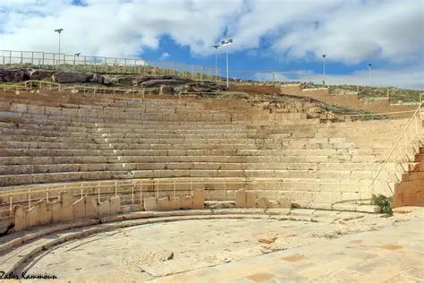

Site archéologique de Cillium
Ancienne cité romaine située au cœur de l'actuelle Kasserine, Cillium était une importante place forte militaire sur la frontière de l'Empire. Le site révèle des vestiges de thermes, d'arcs de triomphe et de fortifications témoignant de son rôle stratégique.